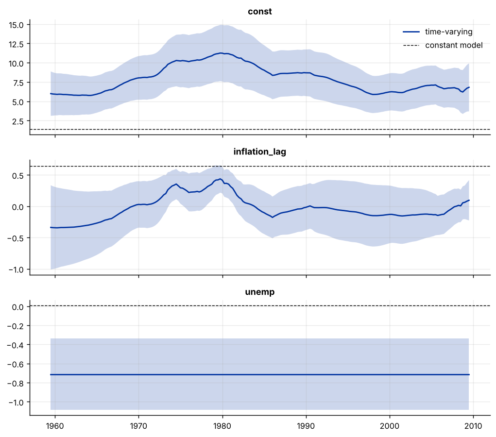

Step 1The question and the model
Did the persistence of inflation, or its sensitivity to unemployment, change between 1959 and 2009? The regression is
with a diagonal \(Q\) whose elements are the variances of the shocks to each coefficient. The Kalman filter computes the likelihood, which is maximised over \(\sigma^2_\varepsilon\) and the diagonal of \(Q\); the Kalman smoother then gives the path of each coefficient using the whole sample. A variance of zero for a coefficient means that it is constant. The model is a Phillips curve:
With a time-varying intercept \(\alpha_t\), the quantity \(\alpha_t/(1-\rho_t)\) is a moving long-run level of inflation, so the intercept absorbs a trend in inflation that persistence would otherwise have to explain.
Before you estimate anything
- Estimate the constant model first. It is the benchmark, and its coefficients are the averages of the paths.
- Know what the model can and cannot find. Random-walk coefficients find slow drift, not a sudden break.
- Watch the error variance. If \(\sigma^2_\varepsilon\) goes to zero, the moving coefficients absorb everything and the paths mean little.
How to write it: methods sentence
We allow the coefficients to vary over time by modelling each as a random walk, and estimate the variances of the coefficient innovations and of the regression error by maximum likelihood with the Kalman filter. We report the smoothed paths of the coefficients with 95% bands.
Step 2Load the data and the constant benchmark
import warnings; warnings.filterwarnings("ignore")
import numpy as np, pandas as pd
import matplotlib.pyplot as plt
import statsmodels.api as sm
from statsmodels.tsa.statespace.mlemodel import MLEModel
d = pd.read_csv("phillips.csv"); n = len(d)
y = d["inflation"].to_numpy(float); X = np.column_stack([np.ones(n), d["inflation_lag"], d["unemp"]]); names = ["const", "inflation_lag", "unemp"]; k = 3
ols = sm.OLS(y, X).fit(cov_type="HAC", cov_kwds={"maxlags": 4})
print(f"{n} quarters, {d.date.iloc[0]} to {d.date.iloc[-1]}")
print(pd.DataFrame({"coef": ols.params, "s.e. (HAC)": ols.bse}, index=names).round(3).to_string())
print(f"R-squared {ols.rsquared:.3f}; standard deviation of the residual {np.sqrt(ols.scale):.2f}")201 quarters, 1959Q3 to 2009Q3
coef s.e. (HAC)
const 1.370 0.545
inflation_lag 0.644 0.090
unemp 0.009 0.087
R-squared 0.416; standard deviation of the residual 2.50How to read it
The constant model says that inflation is persistent (0.64 on its own lag) and that unemployment has no effect at all (0.009, standard error 0.09). This is the average over fifty years, and it is a hard result to believe for a Phillips curve. The next step shows whether the average hides coefficients that move.
Step 3Step 1: Estimate the time-varying model
class TVP(MLEModel):
def __init__(self, endog, exog):
super().__init__(endog, k_states=k, exog=exog, initialization="diffuse")
self["design"] = np.zeros((1, k, n)); self["design", 0, :, :] = exog.T
self["transition"] = np.eye(k); self["selection"] = np.eye(k)
param_names = ["sigma2.obs", "sigma2.const", "sigma2.inflation_lag", "sigma2.unemp"]
start_params = np.r_[y.var() * .5, np.full(k, 1e-3 * y.var())]
def transform_params(self, p): return p ** 2
def untransform_params(self, p): return np.sqrt(p)
def update(self, params, **kw):
params = super().update(params, **kw); self["obs_cov", 0, 0] = params[0]; self["state_cov"] = np.diag(params[1:])
mod = TVP(y, X)
res = mod.fit(method="powell", disp=0, maxiter=4000); res = mod.fit(res.params, method="bfgs", disp=0, maxiter=200)
se = np.sqrt(np.maximum(np.diag(res.cov_params()), 0))
print(pd.DataFrame({"estimate": res.params, "s.e.": se}, index=mod.param_names).round(4).to_string())
print(f"\nratio of the coefficient-shock variance to the error variance: const {res.params[1] / res.params[0]:.3f}, inflation_lag {res.params[2] / res.params[0]:.4f}, unemp {res.params[3] / res.params[0]:.4f}")estimate s.e. sigma2.obs 3.7107 0.2746 sigma2.const 0.1325 0.0845 sigma2.inflation_lag 0.0047 0.0021 sigma2.unemp 0.0000 0.0008 ratio of the coefficient-shock variance to the error variance: const 0.036, inflation_lag 0.0013, unemp 0.0000
How to read it
The error variance is 3.7 and positive, so the moving coefficients do not absorb everything. The variance of the shocks to the intercept is 0.13 (s.e. 0.08) and to the persistence coefficient 0.005 (s.e. 0.002), and the variance of the shocks to the unemployment coefficient is zero. The data support a moving intercept and a moving persistence, and a constant slope on unemployment. Because the variances are on the boundary, the standard errors of the small ones are not reliable.
Step 4Step 2: The paths of the coefficients
b = np.asarray(res.smoothed_state).T # smoothed coefficients, shape (n, k)
sd = np.sqrt(np.array([np.diag(res.smoothed_state_cov[:, :, t]) for t in range(n)]))
dates = pd.PeriodIndex(d["date"], freq="Q").to_timestamp()
fig, ax = plt.subplots(3, 1, figsize=(8, 7), sharex=True)
for j in range(k):
ax[j].plot(dates, b[:, j], label="time-varying"); ax[j].fill_between(dates, b[:, j] - 1.96 * sd[:, j], b[:, j] + 1.96 * sd[:, j], alpha=.2)
ax[j].axhline(ols.params[j], color="k", ls="--", lw=.8, label="constant model"); ax[j].set_title(names[j])
ax[0].legend(frameon=False); plt.tight_layout(); plt.show()
sel = [10, n // 4, n // 2, 3 * n // 4, n - 1]
print(pd.DataFrame(b[sel], index=d.date.iloc[sel], columns=names).round(2).to_string())
print("\nminimum and maximum of each path:", dict(zip(names, zip(b.min(0).round(2), b.max(0).round(2)))))
print("smoothed standard deviation at the middle of the sample:", dict(zip(names, sd[n // 2].round(2)))) const inflation_lag unemp
date
1962Q1 5.83 -0.33 -0.71
1972Q1 8.33 0.06 -0.71
1984Q3 9.32 -0.07 -0.71
1997Q1 6.26 -0.13 -0.71
2009Q3 6.81 0.09 -0.71
minimum and maximum of each path: {'const': (np.float64(5.76), np.float64(11.25)), 'inflation_lag': (np.float64(-0.34), np.float64(0.44)), 'unemp': (np.float64(-0.71), np.float64(-0.71))}
smoothed standard deviation at the middle of the sample: {'const': np.float64(1.7), 'inflation_lag': np.float64(0.17), 'unemp': np.float64(0.19)}
How to read it
The intercept moves between 5.8 and 11.3 (at the selected dates it is 5.8 in 1962, 9.3 in 1984 and 6.8 in 2009), and the persistence coefficient moves between −0.34 and 0.44 (smoothed standard deviation 0.17 in the middle of the sample), so it is much lower than the 0.64 of the constant model. The two moving paths are linked: when the intercept captures a slowly moving level of inflation, the persistence of the deviations from it is low. This is the usual finding of trend-cycle models of inflation (inflation is a moving trend plus noise), not a statement that inflation is not persistent. The unemployment coefficient is constant at −0.71, with a smoothed standard deviation of 0.19, so it is clearly negative, while the constant model found no effect (0.009). A plausible reading is that, in the constant model, the slow movement of trend inflation, which is correlated with unemployment over the sample, contaminated the slope; once the intercept is free to move, the Phillips-curve slope appears. This is an interpretation, and other specifications could give another answer. The first values of the paths are poorly determined, since the filter starts without information.
Step 5Step 3: Does time variation improve the fit?
ll_t = res.llf
p_c = np.r_[np.mean(ols.resid ** 2), np.zeros(k)] # the same model with all coefficient variances fixed at zero
ll_c = mod.loglike(p_c)
rows = [["constant coefficients", round(ll_c, 2), 1, round(-2 * ll_c + 2 * 1, 1)], ["time-varying coefficients", round(ll_t, 2), 4, round(-2 * ll_t + 2 * 4, 1)]]
print(pd.DataFrame(rows, columns=["model", "log-likelihood", "variance parameters", "AIC"]).to_string(index=False))
print("\nlikelihood-ratio statistic:", round(2 * (ll_t - ll_c), 1), "(the null is on the boundary, so a chi-squared p-value is not valid)") model log-likelihood variance parameters AIC
constant coefficients -474.76 1 951.5
time-varying coefficients -447.72 4 903.4
likelihood-ratio statistic: 54.1 (the null is on the boundary, so a chi-squared p-value is not valid)How to read it
The log-likelihood rises from −474.8 to −447.7 and the AIC falls from 951.5 to 903.4, which supports time variation in at least some coefficients. The likelihood-ratio statistic of 54 cannot be compared with a chi-squared distribution, because the null of zero variances is on the boundary of the parameter space; use the AIC, the paths and the estimated variances. The test says that the coefficients are not constant, but not when or why they changed.
Step 6What to report in the paper
Report the constant model as a benchmark, the estimated variances and their reliability, the smoothed paths with bands, and a comparison of the fit. Say that the paths are smoothed, which use future data, so they describe what the data say in hindsight. If a coefficient has a variance of zero, report it as constant.
How to write it: results
The Phillips curve with constant coefficients gives a persistence of 0.64 and no effect of unemployment on inflation. Allowing the intercept and the persistence coefficient to follow random walks improves the log-likelihood by 27 points (AIC 903 against 952). The estimated persistence is much lower than in the constant model, because the intercept absorbs a slow-moving level of inflation, and the unemployment coefficient is constant and clearly negative (−0.71, smoothed standard deviation 0.19), while the constant model finds no effect (0.009).
Step 7Common mistakes
Mistakes to avoid
- Reading the smoothed path as real-time. It uses the future; use the filtered estimates for real-time claims.
- A zero error variance. The paths then fit anything; treat them with caution.
- Comparing likelihoods of models with different initial conditions. Use the same state-space basis for both, as above.
- Testing zero variances with a chi-squared. The null is on the boundary.
- Interpreting an intercept and a slope that move together separately. They are not separately identified in short samples.
- Applying the random-walk model to a sudden break. Use a break test.
- Time-varying coefficients on non-stationary variables. The paths can be spurious.
- Too many moving coefficients for the data. Let only the coefficients of interest move.